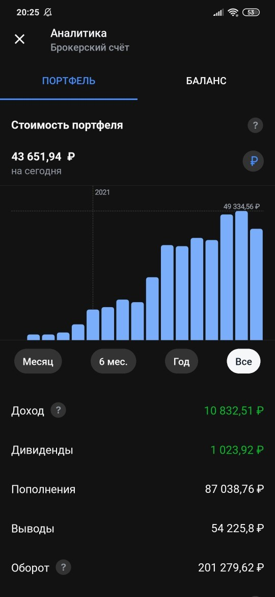

Моя история инвестиции в фондовый рынок начинается с 11 класса, когда мне исполнилось 18 лет. Я понял, что если я сейчас не начну инвестировать, то так и останусь бедным на всю жизнь. Начал я с самого простого способа. Я оформил карточку Тинькофф и счёт в Тинькофф инвестиции. Начал каждый месяц откладывать со стипендии и с других источников минимум 10%. На скопившиеся средства я потихоньку покупал акции и уже через год смог добиться более 35% годовых, что является очень достойным результатом. Всё это у меня получилось благодаря минимальным знаниям фондового рынка и дисциплинированным подходом в отложении средств. На момент написания этой истории, портфель просел и прибыль не такая большая как была, но это временно, рынок восстановиться и всё вернётся на свои места. Но даже при такой текущей ситуации видно что я заработал не плохие деньги, просто покупая на фондовом рынке.
 ^